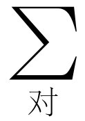

第13章 功与势能（上）
§13-1 落体的能量
在第4章中我们讨论过能量守恒。那里，我们没有引用牛顿定律，但是，按照牛顿定律，能量实际上是守恒的。我们来看一看能量守恒如何与牛顿定律相符合是很有意义的。为了清楚起见，我们从最简单的实例开始讨论，然后逐步推广到比较难的例子。
能量守恒最简单的例子是一个垂直下落的物体，它只在垂直方向上运动。一个仅仅在重力作用下改变高度的物体，由于下落运动而具有动能T （或K.E.），并且还具有势能mgh （简写成U 或P.E.）。这两种能量的总和是恒量
或
T +U =恒量．（13.1）
现在我们要证明这一表述是正确的。我们说“证明这一表述是正确的”是什么意思呢？从牛顿第二定律我们很容易说明物体如何运动，而且容易求出速度如何随时间而变化——速度的增加与时间成正比，高度随时间的平方而改变。所以，假若我们以物体静止的那个位置作为零点来测量高度，那么，高度等于速度的平方乘以一些常数就不足为奇了。不管怎样，我们还是来稍微仔细地看一下这个问题。
我们将动能对时间求微商，然后应用牛顿定律直接 从第二定律求出动能是如何变化的。我们把mv 2 /2对时间求微商，由于假设m 是常数，故得
但由牛顿第二定律，m （dv /dt ）=F ，所以
一般地讲，结果应该是 F · v ，但在一维情况下我们只要写成力乘以速度就够了。
在我们的简单例子中，力是常数，等于-mg ，即一个垂直向下的力（负号的意思是指作用向下），而速度当然是垂直位置（或高度）对时间的变化率。这样，动能的变化率就是-mg （dh /dt ），非常奇怪，这个量是另外的物理量的变化率，它是mgh 的时间变化率！因此，随着时间的推移，动能的变化在数量上等于mgh 的变化，而符号相反；所以，这两个量的总和保持不变，证明完毕。
从牛顿第二定律我们已经证明，在恒力的情况下如果将势能mgh 与动能mv 2 /2加在一起，则能量是守恒的。现在我们进一步看一下是否能将它推广，以加深我们的理解。能量守恒定律是否只对自由落体适用，还是可以适用于更一般的情况？根据对能量守恒的讨论，我们预计它对一个物体在重力作用下沿一曲线无摩擦地从一点运动到另一点的情形也是成立的（图13-1）。
如果物体从原来的高度H 到达某一高度h ，即使速度不再是沿垂直方向，上述方程仍然应当成立。我们要搞清楚为什么这条定律仍然正确。下面我们用同样的分析方法求出动能的时间变化率。诚然，动能的时间变化率仍是mv （dv /dt ），而m （dv /dt ）则是动量大小的变化率，也就是运动方向上的力 ——切向力F t 。于是有
这里的速率是沿着曲线的距离对时间的变化率ds /dt ，但切向力F t 不是mg ，而是随路径的距离ds 与垂直的距离dh 的比率而减弱，换句话说
所以
因为ds 被消掉了，于是我们就得到-mg （dh /dt ），与前面所证明的一样，它等于-mgh 的时间变化率。
为了确切地理解能量守恒定律一般在力学中是怎样起作用的，我们来讨论几个有助于分析这个问题的概念。
首先我们讨论三维情况下一般的动能变化率。在三维空间的动能是
把它对时间求微商，我们得到三个项
但m （dv x /dt ）是沿x 方向作用在物体上的力F x ，于是式（13.4）的右边就是F x v x +F y v y +F z v z 。回忆一下矢量分析，我们记得这就是 F · v ，因此有
这个结果从下面的方法能够更快地推导出来：假如 a 和 b 是两个矢量，它们都可以与时间有关，对 a · b 求微商，一般有
把这个关系式用到 a = b = v 的情形
由于动能概念以及一般的能量概念很重要，所以在这些方程式中的一些重要项使用了各种名称。正如我们所知道的那样，mv 2 /2称为动能 ， F · v 称为功率 ，作用于物体上的力乘以物体的速度（矢量点积）是力传递给物体的功率。这样，我们就有了一个奇妙的定理：一个物体动能的变化率等于作用于该物体的力所消耗的功率。
然而，为了研究能量守恒，我们打算对它作进一步的分析。让我们估计一下在很短的时间dt内动能的变化。假若在式（13.7）两边都乘以dt ，我们得到的动能的微小变化等于力“点乘”移动的距离元
dT = F ·d s .（13.8）
若对其积分，我们得到
这是什么意思呢？它的意思是：如果一个物体在力的作用下在某弯曲的路径上以任何方式运动，则当它沿着此曲线从一点移动到另一点时，动能的变化率等于沿着曲线的分力乘以位移元ds 的积分，积分从该点积到另一点。这个积分也有一个名称——叫做作用于物体的力所做的功。我们立即可以看到：功率等于每秒钟所做的功。我们也可以看到：仅仅是力在运动方向的分量对功有贡献。在我们的简单例子中，只有垂直方向的力，且只有单一的分量F z ，它等于-mg 。不管物体在这些情况下如何运动，例如沿抛物线下落，总可以把 F ·ds 写成F x dx +F y dy +F z dz ，但除了F z dz =-mg dz 之外其他都没有了，因为力的其他分量都是零。由此，在我们的简单情况下有
所以我们又一次得到：在势能中只考虑物体下落的垂直高度。
现在我们来讲一讲单位。因为力以牛顿来量度，为了得到功，我们要乘上距离，所以功以牛顿米（N·m）来量度，但人们不喜欢说牛顿米，而宁可说焦耳（J）。1 N·m称为1 J；功是以焦耳来量度的。功率的单位是焦耳每秒，也叫瓦（W）。如果瓦乘以时间，就是所做的功。从技术上讲，电力公司对我们家庭所做的功，等于瓦乘以时间。千瓦小时就是这样得来的，1 kW·h就是1 000 W乘以3 600 s，或3.6×106 J。
现在我们再举一个能量守恒的例子。考虑一个具有初始动能、快速运动的物体，它克服地板的摩擦而滑动，最后停了下来。开始滑动时动能不 等于零；而最后停止时动能为零；是力做了功，因为每当有摩擦时，在与运动相反的方向上就存在分力，所以运动物体的能量不断地损耗掉。现在我们在支点的末端放置一个小质量的物体，使它在重力场中在垂直平面内无摩擦地振动。这时发生的现象就不同了，因为当物块向上运动时力向下，而当物块朝下运动时力亦朝下；所以，向上时 F ·d s 的符号不同于向下时的符号。向上和向下路径上每个对应点的 F ·d s 数值大小完全相等，而符号相反，所以在这种情况下积分的净结果是零。于是，物块返回到底部的动能与前一次离开底部时的动能是一样的；这就是能量守恒原理（注意，当存在摩擦时，乍看起来能量守恒似乎失效。我们不得不寻找其他形式 的能量。事实表明，一个物体与另一物体摩擦时产生了热，暂时我们假定并不知道这些事）。
§13-2 万有引力所做的功
下面所讨论的问题要比上面的难得多；不像我们已经讨论过的那样，这里的力不是恒量，也不只是在垂直方向上。例如，我们想要讨论一个围绕太阳运动的行星，或者在空中围绕地球运转的卫星。
我们首先讨论一个物体从某点1开始，比方说直接落向太阳或地球（图13-2）。在这种情况下能量守恒定律还适用吗？此时，唯一的差别是力随着物体的运动而变化 ，它不是恒量。正如我们所知道的，这个力是GM /r 2 乘以质量m ，其中m 是运动物体的质量。确实，当物体落向地球时，动能随下落的距离的增大而增加，恰如力不随高度而变化那种情况一样。问题在于：是否可能找到另一个不同于mgh 的势能公式，即离地球的距离的函数，使得能量守恒仍然是正确的。
这个一维情况很容易处理，因为我们已知动能的变化等于-GMm /r 2 乘以位移dr 的积分，积分从运动的一端到另一端
对此情况不必乘上余弦，因为力与位移是同方向的。dr /r 2 是容易积分的；所得的结果是-1/r ，因此式（13.11）变为
这样我们就得到一个不同的势能公式。式（13.12）告诉我们，在点1、点2或其他任何地方所计算的（mv 2 /2-GMm/ r）的数量是一个不变的数值。
我们有了引力场中沿垂直方向运动的势能公式。现在有一个有趣的问题：我们能否在引力场中获得永久的运动？引力场是变化的；在不同的地方，引力场的方向和强度都不相同。我们是否能用一个固定的、无摩擦的滑道来这样做；从某一点开始，将物体提高到另一点，然后沿着一段弧把它移动到第三点，接着使它降低一段高度，以一定的倾斜度移动它，再沿别的路径把它拉高，以致当我们使物体回到初始点的时候，引力做了一些功，而使物体的动能有所增加呢？我们能否设计出某种曲线，使物体返回时要比先前运动得快一些，以致它周而复始地不断往复而获得永久运动？由于永久运动是不可能的，我们应该发觉上述过程也是不可能的。我们应该发现如下的命题：既然没有摩擦，那么物体既不会以较大的速度，也不会以较小的速度返回到原来的位置——它应能沿任何封闭路径不断地作往复运动。换句话说，循环一周重力所做的总功应为零 。因为这个功如果不是零，我们就能从循环中取得能量（如果所作的功结果小于零，以致沿这一条路径得到的速率比原来的低，那么我们只要沿相反的路径就可以从中取得能量，因为力当然只取决于位置，与方向无关；如果一条路径是正的，那么相反的一条路径就为负，所以除非是零，否则我们将从两种走法中的一种获得永久运动）。
引力所做的功果真是零吗？让我们来证明它确实为零。首先，我们要稍微解释一下为什么是零，然后用数学方法来检验一下。假设我们使用一条如图13-3所示的简单路径。其中一个质点从点1转移到点2，然后沿圆弧到3，回到4，再到5，6，7和8，最后返回到1。所有这些线，都是以M 为圆心的半径或圆弧。使m 沿着这条路径运行要做多少功呢？在点1与点2之间所做的功是GMm 乘以两点之间1/ r的差
从2到3，力正好与曲线垂直，所以W 23 ≡0。从3到4做的功是
用同样的方法我们可求得
以及W 81 =0，于是有
我们注意，r 2 =r 3 ，r 4 =r 5 ，r 6 =r 7 以及r 8 =r 1 ，因此W =0。
当然，我们可以怀疑这一曲线是否太特殊了。如果我们使用一条真实曲线将会怎样呢？让我们在真实曲线上试一试。首先我们断言，一条真实曲线总是可用如图13-4所示的一系列锯齿形曲线来适当模拟，由此，只需证明沿小三角形路径所做的功为零，就可证实沿真实闭合曲线一周所做的功为零；但不作一点分析，沿一个小三角形所做的功为零在开始时也不是显而易见的。我们将其中的一个三角形放大，如图13-4中所示。在三角形上，从a 到b 和b 到c 所做的功，与a 直接到c 所做的功是否相同呢？假定力作用在一个确定的方向上；作为一个例子，我们取一个三角形，它的bc 边就在这个方向上。我们还假设三角形是如此小，以致作用于整个三角形上的力基本上是恒量。那么从a 走到c 所做的功是怎样的呢？它是
等式第二步是因为力是一个恒量。现在我们计算沿三角形其他两边运动时引力所做的功。在垂直边ab 上力垂直于ds ，所以做功为零。在水平边bc 上
这样我们就看到，沿小三角形两个边所做的功，与沿斜边所做的功是一样的，因为s cos θ 等于x 。前面我们已经证明，对于一系列如图13-3那种锯齿组成的任何路径，引力所做的功为零。现在又证明了如果以直穿对角来代替沿锯齿形运动，则所需做的功是相同的（只要锯齿形足够细小，我们总是可以使它非常细小）；因此，在引力场中 ，环绕任何封闭路径运行一周所做的功是零 。
这是一个非常值得注意的结果。它告诉我们某些以前不知道的行星运动的情况：当行星围绕太阳（没有其他绕它运动的物体，也不存在其他力）运动时，它以这种方式运动，即在轨道的每一点上，任何一点速率的平方减去某些常数与该点半径的比值，其数值总是相等的。例如，行星越是靠近太阳，运行越是快，快多少呢？利用下面这样一个数量：如果行星不是环绕太阳运行，而是改变它的速度方向（但不改变它的数值大小）使它作径向运动，然后让它从某一特定的半径落到我们所感兴趣的半径上，那么，新的运动速度与它在真实轨道上的速度是相同的，因为这正好是沿复杂路径运动的另一个例子。只要我们使它回到同一距离，动能总是相同的。所以，无论运动是真实的、未受干扰的，或者用凹槽、无摩擦约束来改变运动方向，行星到达同一点的动能是相同的。
这样，正如我们前面所作的那样，当我们对行星在其轨道上的运动作数值分析的时候，能够通过计算这些恒量——每一步中的能量来检验一下我们是否引进了明显的误差。能量应当不会改变。对于表9-2的轨道而言，能量确实发生变化 [1] 。它从开始到末尾大约变化了1.5%。这是什么原因呢？或者是由于我们的数值计算采用了有限的数值间隔，或者是由于某些地方在运算上有点差错。
我们来考虑另一种情况下的能量：弹簧上一个小球的问题。当我们使小球离开平衡位置时，恢复力正比于位移。在这种情况下，我们能否得出一个能量守恒的定律？能！因为这种力所做的功是
因此，对于弹簧上的小球，我们可以得到：物体振动的动能加上kx 2 /2是一个恒量。现在来看一下这个过程是如何完成的。我们把小球往下拉着，它静止不动，所以速度是零。但此时x 不是零，而是极大，所以有一定的能量当然是势能。现在我们放开小球，就会发生一些情况（详细情况不予讨论），但在任何瞬时的动能加势能必然是一个恒量。例如，当小球通过原来的平衡点时，其位移x 等于零，但具有最大的v 2 ，并且v 2 随x 2 的变大而变小，等等。所以，当小球上下运动时，x 2 与v 2 保持均衡。于是我们有另一个规则，即如果力是-kx ，则弹簧的势能是kx 2 /2。
§13-3 能量的求和
现在我们接着考虑如果有许多物体时将会产生怎样的更一般的问题。假设我们有一个许多物体的复杂问题，物体用i =1，2，3，…来标记，它们彼此互相施加引力，即相互吸引。结果会怎样呢？我们将证明：如果把所有质点的动能加起来，再把每一对质点相互之间的引力势能-GMm/r ij 加上去，则其总和是一个恒量
我们如何证明它？将方程的两端对时间求微商，则方程的右端为零。当对 求微商时，我们得出m 乘速度的微商，这就是力，就像式（13.5）中那样。我们把牛顿万有引力定律所描写的力代入，就看到它等于
对时间求微商。
总动能对时间的微商是
总势能对时间的微商是
而
所以
由于r ij =-r ji ，而r ij =r ji ，于是
我们必须注意 与 所指的意思。在式（13.15）中， 是指i 依次可取i =1，2，3，…所有的数，对每一个i ，j 可取除i 之外的任何数。因而假如i =3，j 所取的值就是1，2，4，…。
另一方面，在式（13.16）中， 是指i 和j 的给定值只出现一次。这样，1和3这对质点对总和式中只供献一项。为了保持这一目的，我们约定i 可取1，2，3，…所有的数，而对于每一个i ，令j 只能取大于 i 的数。因此如果i =3，j 只能取4，5，6，…，但我们必须注意，对于每一个i ，j 值对总和有两项贡献，一项包含 v i ，另一项包含 v j ，这两项与式（13.15）中的一样，在该式中所有 的i 和j （i =j 除外）之值都包括在求和之中，因此，把一项一项匹配起来，我们就可看出式（13.16）与（13.15）恰好相同，而符号相反，所以动能与势能之和对时间的微商的确为零。于是我们看到，对于许多物体来说，总动能是每一个物体的动能之和，而且势能也很简单，它是所有质点之间的势能之和。我们可以理解它为什么是每一对质点的能量之和：假设想要求得使这些物体彼此离开一段距离需要做功的总量，我们可以分几步将物体从无穷远的、不存在作用力的地方，一个一个地取得。首先，我们把物体1拿来，因为还不存在对它施加力的物体，所以不需要做功。接着，把物体2拿来，它需要做一些功，即W 12 =-Gm 1 m 2 /r 12 。现在请注意（这一点很重要）：假如我们再把另一个物体放在第三个位置上，那么，在任何时刻，作用在物体3上的力可写成两个力——物体1和物体2作用于物体3上的力的总和。因此，所做的功是每个力 所做的功之和，因为如果 F 3 能被分解成两个力之和
F 3 = F 13 + F 23 ，
则功就是
∫ F 3 ·d s =∫ F 13 ·d s +∫ F 23 ·d s =W 13 +W 23 .
这就是说，所做的功是克服第一个力和第二个力的功之和，就像每个力单独作用那样。用上述方法我们可以看到，要使这些物体集合成一定的组态所需的总功，恰好是式（13.14）作为势能所给出数值。正是由于引力服从力的叠加原理，所以我们能够把总势能写成每一对质点之间势能的总和。
§13-4 巨大物体的引力场
现在我们将要计算在一些涉及到质量分布 的物理状况中遇到的场。迄今为止，我们只讨论过质点的情况，还没有考虑过质量分布的问题，所以计算不止一个质点所产生的力是很有意义的。首先，我们将求出无限大物质薄片作用于一个物体上的万有引力。物质薄片作用在位于P 点处单位质量上的力（图13-5），显然是指向物质薄片的。假设P 点离薄片的距离为a ，且设这块大薄片单位面积的质量为 μ 。我们设 μ 是常数，即认为薄片是均匀的。现在要问：在薄片上与最接近P 点的O 点的距离为ρ 到ρ +dρ 之间的质量dm 所形成的场d C 有多大？答案是：d C =G （dm r /r 3 ），这个场的指向是沿着 r 方向的；我们还知道，当把所有的小矢量d C 相加而得 C 的时候，只剩下x 方向的分量。d C 的x 分量是

现在所有与P 具有相同距离r 的dm 将产生相同的dC x ，因此，我们立即可以把dm 写成ρ 到ρ +dρ 之间这一圆环 中的总质量，即dm = μ 2π ρ dρ （若dρ ≪ρ ，2π ρ dρ 就是半径为ρ 、宽度为dρ 的圆环面积），这样
于是，因为r 2 =ρ 2 +a 2 ，ρ dρ =r dr ，所以有
这就是说，力与距离a 无关！为什么？难道我们弄错了吗？也许你会认为：物体离我们越远，作用力应该越弱；但不是这样！如果我们接近这个无限大薄片，那么这块薄片上的绝大部分物质是处于不适宜的角度在吸引我们。假如我们离得远一些，则薄片上有较多的物质处于更有利的角度把我们拉向薄片。在任何距离上，最有效的物质位于一定的圆锥内。当我们远离薄片时，作用随距离的平方而减少；但在同一角度上，同一圆锥内有更多的物质正好随距离的平方而增加！注意到下面的事实我们就能作出严格的分析：在任何给定的锥体中，微分元的贡献事实上与距离无关，因为一个给定的质量所产生的力的大小随距离的变化与包含在圆锥内的质量多少随距离的变化，是相应而相反的。当然，这个作用力并不是真正常数，因为当我们走到薄片的另一面时，它的符号就改变了。
事实上，我们已经解决了一个电学上的问题：假如我们有一个带电的薄板，其单位面积的电量为σ ，那么薄板外面一点的电场是σ /（2ε 0 ）。假若薄板带正电荷，电场方向就由薄板指向外面；假若薄板带负电荷，电场方向就指向薄板。为了证明这一点，我们只要注意引力中的G 相当于电学中的1/4π ε 0 。
现在我们假设有两个平板，其中一个带正电荷+σ ，另一个带负电荷-σ ，它们之间的距离是D 。现在要问场是怎样的？在两个平板外面，场是零。为什么？因为一个吸引，另一个排斥，而吸引力与排斥力都与距离无关，所以它们相互抵消掉了。同样，两个平板之间 的力显然是单独一个平板的两倍，即E =σ/ε 0 ，且电场方向是从带正电荷的平板指向带负电荷的平板。
现在我们来研究一个非常有趣而重要的问题。这个问题是这样的：地球对其表面或外面一点所产生的力，正像地球质量全部集中在地心所产生的力一样。我们一直假设问题的答案就是如此，但这种假设的正确性并不明显，因为当靠近一个物体时，有些质量离我们非常近，而有些质量则离开我们较远。但当我们把所有的效果加起来，净的作用力正好与质量全部集中在中点的力一样，这似乎是一个奇迹。现在我们来验证这一奇迹的正确性。我们用一个均匀的空心薄壳来代替整个地球，令薄壳的总质量是m ，让我们来计算一下离球心的距离为R ，质量为m ′这一质点的势能（图13-6），并且证明这个势能与质量m 集中在球心一点时的势能一样（势能比场容易计算，因为我们可以避免角度的麻烦，只要把各部分质量的势能相加就可以了）。如果我们令某一个截面与球心的距离为x，那么在薄片dx 中的所有质量与P 点的距离都是r ，由这个圆环产生的势能应该是-Gm′ dm /r ；那么在小薄片dx 中的质量是多少呢？其数量是
其中 μ =m /（4π a 2 ）是球壳的质量面密度（球带的面积正比于它的轴宽是一个一般的规则）。dm 的势能应该是
但我们看出
r 2 =y 2 +（R -x ）2 =y 2 +x 2 +R 2 -2Rx =a 2 +R 2 -2Rx .
这样就有
因此有
以及
这样，对于一个球状薄壳，在其外面质量m ′的势能与薄壳质量全部集中在球心时的势能是完全一样的。地球可以想象成为由一系列不同的壳层所组成，每一壳层贡献一个能量，这个能量只取决于壳层的质量以及离开中心的距离。把各壳层的质量统统加起来，我们就得到总的质量 ，因此，地球的作用力就好像所有的物质都集中在它的中心一样！
但是必须注意：假若有一个点P 是在球壳里面 ，那将会怎样？当P 点在球壳里面，我们可以作同样的计算而得到两个r 的差，但现在它的形式是
a +R -（a -R ）=2R ，
即两个r 的差是P 点离中心距离的两倍。换言之，W 的结果是
它与R 和P 点的位置都无关，也就是说，不论物体在球内什么地方 ，其势能都相同，因此不存在作用力；当我们在球内移动物体时不做功。如果一个物体无论放在球内什么地方，其势能都一样，则不可能有力作用于该物体上。所以在球内不存在作用力，只在球外存在作用力；而球外的作用力与质量全部集中在球心时的作用力是完全相等的。